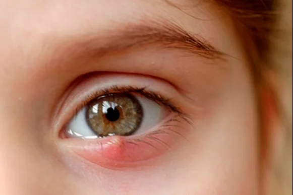

Expanded Nursing Uganda Explanation
Stye should be understood beyond a short definition. Link the concept to patient history, focused assessment, common risks, nursing priorities, documentation and evaluation of outcomes.
01 Stye or Hordeolum
A stye is a painful, red lump that forms on the edge of the eyelid. It is an acute infection of a small gland in the eyelid, most commonly caused by the bacterium Staphylococcus aureus . The medical term is Hordeolum .
A stye is a localized infection of the hair follicles or sebaceous glands of the eyelids.
A stye is a staphylococcal abscess that may occur on either the external or internal margin of the eyelids.
02 Types of Stye
This is the most common type, appearing on the outer edge of the eyelid. It is an infection of an eyelash follicle or a gland of Zeis or Moll. External styes are generally more painful than internal styes because they form on the surface of the eyelid, often along the lash line, involving many nerve endings, making them tender and noticeable.
- Location: Outer edge of the eyelid, at the lash line.
- Cause: Acute bacterial infection of an eyelash follicle or a sebaceous gland (Gland of Zeis or Moll).
- Pain Level: Typically more acutely painful, sharp, and localized tenderness.
- Appearance: Often resembles a small, red, tender pimple or boil, sometimes with a visible head.
This forms on the inner surface of the eyelid and is an infection of a Meibomian gland (an oil-producing gland within the eyelid). Unlike external styes, the pain from an internal stye is often described as a more generalized ache or pressure rather than sharp, localized pain, and they tend to be less acutely painful. However, they can cause more significant and diffuse swelling of the entire eyelid. Internal styes may sometimes require medical intervention for drainage as they are less likely to rupture on their own and tend to recur.
- Location: Inner surface of the eyelid, often causing swelling across the entire eyelid.
- Cause: Acute bacterial infection of a Meibomian gland.
- Pain Level: Less acutely painful than external styes, often a generalized ache or pressure.
- Appearance: Can cause significant, diffuse swelling of the eyelid; the lump may be felt or seen when the eyelid is everted.
A chalazion is not a type of stye, but rather a chronic, non-infectious lump in the eyelid. It often develops when an internal stye doesn't fully resolve, or when a Meibomian gland becomes blocked and its contents (oil) are released into the surrounding tissue, causing sterile inflammation. Unlike styes, chalazia are typically painless once the initial inflammation subsides, although they can cause cosmetic concerns or, if large enough, temporary blurred vision by pressing on the cornea.
- Location: Usually forms deeper in the eyelid, away from the lid margin.
- Cause: Blocked Meibomian gland, leading to sterile inflammation; often a sequela of an untreated internal stye.
- Pain Level: Generally painless and non-tender after the initial inflammatory phase subsides.
- Appearance: A firm, round, non-tender lump in the eyelid; typically no acute redness unless secondarily infected.
03 Clinical Features (Signs and Symptoms)
The signs and symptoms of a stye are very distinct. You will see and hear the following from your patient:
- A visible lump: A noticeable red lump appears on the top or bottom eyelid.
- Swelling and Redness: The area is red and swollen. Sometimes a small area is affected, but sometimes the entire eyelid swells up.
- Pain and Tenderness: The lump is painful, and it is tender when touched.
- Itching and Burning: Patients often complain of itching in the early stages, as well as a burning sensation in the eye.
- Pus Formation: A tiny, yellowish spot (pus point) develops at the center of the swollen area after 2-3 days, right before it may burst spontaneously.
- Eye Discomfort: Patients feel a gritty sensation, as if a foreign body is in the eye. There is also discomfort during blinking.
- Watering and Discharge: The eye may water excessively (tearing) and can have mucous discharge. This can lead to crusting of the eyelid margins, especially upon waking.
- Sensitivity to Light (Photophobia): The eye becomes very sensitive to bright light.
- Blurred Vision: In some cases, vision may be temporarily blurred due to the swelling or discharge.
In summary,
- Redness on the affected area
- Pain
- Tenderness
- Itching
- Photophobia
- Pus formation
- Yellowish swelling 3 days b4 opening spontaneously
- May burst spontaneously
- Itching in the early stages
- A lump on the top or bottom eyelid
- Swelling, pain & tenderness
- Pus formation
- Watering of the eye
- Eye is sensitive to light
- Small area of the eyelid is swollen but sometimes the entire eyelid swells up
- Tiny, yellowish spot develops at the center of the swollen area
- Discomfort during blinking
- Sensation of a foreign body in the eye
- Mucous discharge in the eye
- Blurred vision
- Crusting of the eyelid margins
- Burning in the eye
04 Management of a Stye
The goals are to
- relieve pain, promote drainage, and prevent the spread of infection. Most styes will heal spontaneously with simple care.
- Usually the stye will heal spontaneously
- Avoid rubbing the eye as this might spread the infection
- Apply a warm/ hot compress to the eye for 10 minutes
- Apply tetracycline eye ointment 1% 2-4 times daily until 2 days after symptoms have disappeared
- Remove the eye lash when it’s loose
- When the forms in one of the deeper glands of the eyelid a condition is called internal hordeolum
- The pain and other symptoms are usually more severe.
- Because this type of the stye rarely ruptures by it self, a doctor may have to open it to drain the pus
- Warm Compresses: This is the most important treatment. Apply a clean cloth soaked in warm water to the closed eye for 10-15 minutes, 3-4 times a day . This helps drainage.
- Lid Hygiene: Gently clean the eyelid margins to remove crusts and bacteria.
- Important Advice: Tell the patient to NEVER squeeze or rub the stye , as this can spread the infection deeper.
- Eyelash Removal: You can gently remove an eyelash if it is loose and coming directly from the center of the stye, as this can help it drain.
- Topical Antibiotics: A clinician may prescribe Tetracycline 1% eye ointment or Chloramphenicol eye ointment, applied 2-4 times daily until 2 days after symptoms have disappeared.
- Pain Relief: Simple analgesics like Paracetamol can be used for pain.
- Oral Antibiotics: These are reserved for severe infections or if the infection spreads to the surrounding skin (preseptal cellulitis).
- Incision and Drainage (I&D): This procedure is performed if resolution does not begin in the next 48 hours after warm compresses are started, especially for a painful internal hordeolum.
- Procedure: The procedure consists of the doctor numbing the area, making a very small incision on the inner or outer surface of the eyelid, and draining the pus. Very small sutures may be used to close the lesion.
05 Nursing Interventions
Your role as a nurse is central to effective management and prevention.
- Assess and Differentiate: Conduct a thorough assessment of the patient’s eye, taking a good history to differentiate between a stye and other conditions like a chalazion or cellulitis. Assess pain using a pain scale.
- Educate on Warm Compresses: Demonstrate the correct technique for warm compresses, using a clean cloth, ensuring the water is warm (not hot), and applying for the right duration and frequency.
- Reinforce the "No Squeeze" Rule: Emphatically explain why squeezing or rubbing is dangerous and can lead to a much worse infection like cellulitis.
- Promote Eyelid Hygiene: Teach the patient and their family how to gently clean the eyelids with warm water and a clean cotton ball to remove crusts and reduce bacterial load.
- Administer Medications Safely: If prescribed, teach the patient the correct way to apply eye ointment or drops without contaminating the tube/bottle tip and without touching the eye itself.
- Implement Infection Control Measures: Stress the importance of rigorous hand washing before and after touching the eye. Advise against sharing towels, pillowcases, and facecloths.
- Monitor for Complications: Continuously assess for signs of worsening infection, such as increased swelling, severe pain, changes in vision, or fever. Know the red flags for referring to a doctor immediately.
- Provide Pain and Comfort Management: Administer prescribed analgesics and reassure the patient that styes are common and usually resolve with proper care. This reduces anxiety.
- Offer Nutritional Advice: Suggest a healthy diet rich in vitamins A and C to support immune function and promote healing.
- Provide Clear Discharge and Prevention Advice: Give clear, simple instructions on how to prevent recurrence, focusing on makeup hygiene, not rubbing eyes, and managing underlying conditions like blepharitis.
- Document Everything: Accurately document all assessments, interventions, patient education provided, and the patient's response to treatment in the nursing notes.
06 Nursing Care Plan
- Assessment Nursing Diagnosis Planning (Goals) Implementation: Interventions Implementation: Rationale Evaluation
- Subjective: Patient states, "My eyelid is very sore." Objective: Localised, red, swollen, tender lump on the upper eyelid margin. Acute Pain related to the inflammatory process and pressure from abscess as evidenced by patient's verbal report and tenderness on palpation. Patient will report a reduction in pain within 24 hours. Patient will demonstrate correct application of warm compress. 1. Teach and demonstrate application of warm compresses for 10-15 mins, 4x daily. 2. Administer prescribed analgesics. 3. Advise patient to avoid touching the stye. 1. Heat promotes drainage, which relieves pressure and pain. 2. Analgesics provide systemic pain relief. 3. Pressure worsens pain and risks spreading infection. Goal Met. Patient reports pain has decreased and correctly shows how to apply a warm compress.
07 Complications
- Chalazion: An internal stye may heal and leave a painless lump.
- Preseptal Cellulitis: The infection spreads to the whole eyelid. This needs urgent antibiotic treatment.
- Orbital Cellulitis: A medical emergency where the infection goes behind the eye. Refer immediately.
- Recurrence: Styes can come back, especially with poor hygiene.
08 Prevention
- Good Personal Hygiene: Proper and regular hand washing is the most important preventive measure.
- Face Washing: Keep the face, especially the eye area, clean.
- Makeup Hygiene: Never share cosmetics or eye makeup tools. Remove all makeup every night. Discard old or contaminated eye makeup (every 3-6 months).
- Do Not Share Personal Items: Avoid sharing towels, flannels, or pillowcases.
- Good personal hygiene,Proper hand washing
- Regular washing of the face
- Remove any loose eyelashes
- it is recommended to never share cosmetics or cosmetic eye tools with other people
- It is also recommended to remove makeup every night before going to sleep and discard old or contaminated eye makeup.
09 Nursing Uganda Clinical Lens
Use Stye as a practical nursing topic, not only a memorized definition. Study medicines through indication, safety checks, expected response, adverse effects and patient teaching.
- What to understand first: define stye, identify the normal or expected pattern, then explain what changes when the patient is unwell.
- Why it matters in care: the nurse must recognize risk early, explain findings clearly, document accurately and know when to escalate.
- How to revise it: connect each point to assessment, nursing diagnosis or care problem, intervention, rationale and evaluation.
10 Assessment Guide
- Diagnosis or reason for the medicine, allergies, pregnancy status and previous reactions.
- Current medicines, herbal products, renal or liver risk and baseline observations.
- Dose, route, timing, dilution, expiry date and documentation requirements.
11 Nursing Priorities, Rationales and Outcomes
- Apply the rights of medication administration and facility policy.
- Monitor therapeutic response and class-specific adverse effects.
- Educate the patient on purpose, timing, missed doses, warning symptoms and adherence.
The rationale for these priorities is patient safety: nursing actions should prevent deterioration, reduce discomfort, support recovery and create clear evidence for the next caregiver.
- Expected outcome: The medicine produces the intended effect without preventable harm, and administration is accurately documented.
12 Patient Teaching and Revision Check
- Explain stye in simple language the patient or caregiver can repeat back.
- Teach warning signs, medicine or follow-up instructions, hygiene or lifestyle points where relevant.
- For exams, prepare a short answer using: definition, causes or risk factors, signs, assessment, management, complications and prevention.
- For ward practice, document baseline findings, actions taken, patient response and the plan for review.
Illustrations and Diagrams (12)



4 more diagrams available, open the lesson for full illustrations.
Related Video Lectures
Watch nursing lecture videos on YouTube for this topic. Opens in a new tab.
Watch on YouTubeExternal link: YouTube may use its own cookies and terms. Nursing Uganda is not affiliated with YouTube.